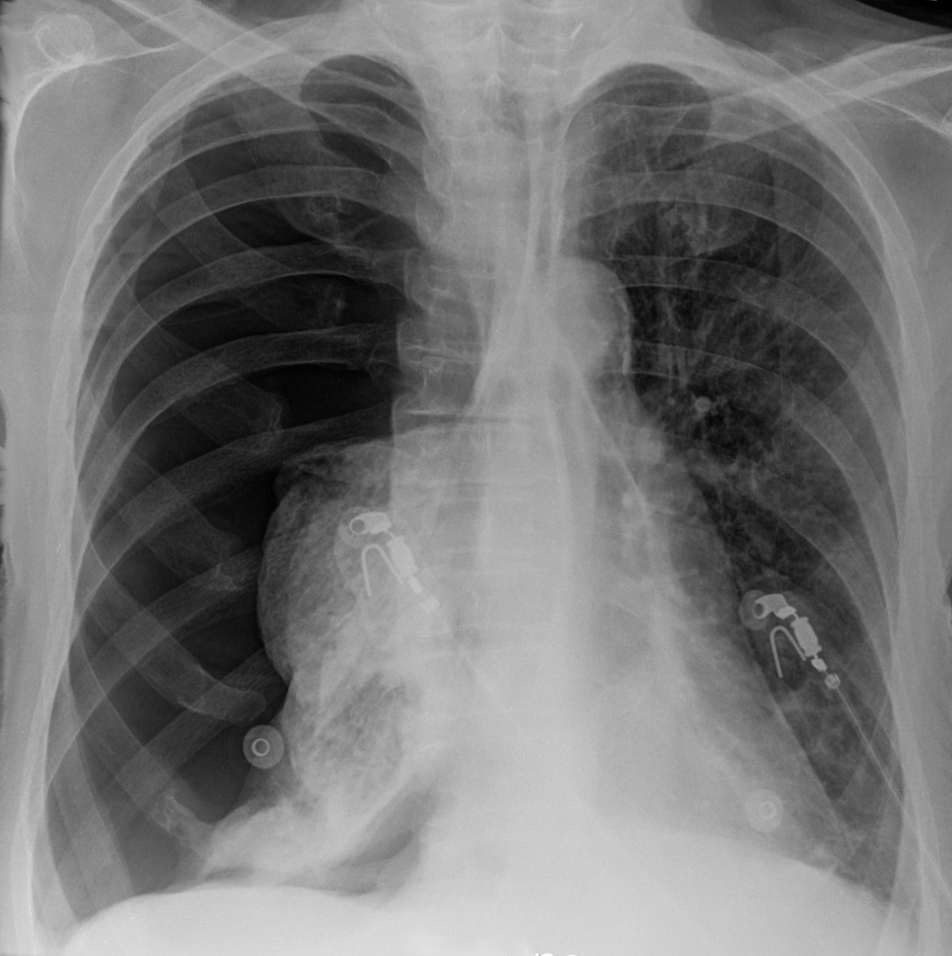
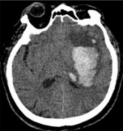
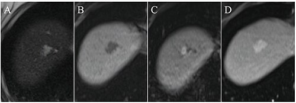
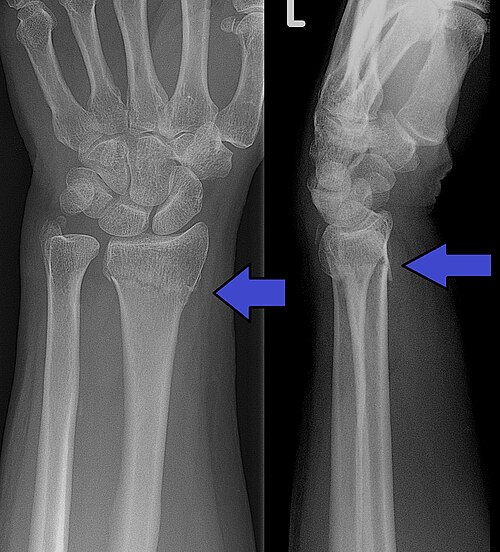

X-RAY / CT185 例
胸部
胸部影像
胸膜 · 肺实质 · 肺血管
113 个教学主题
从典型征象到鉴别诊断，在真实病例节奏中建立你的影像思维。

X-RAY · CHEST胸膜 · 肺实质 · 肺血管
113 个教学主题

出血 · 梗死 · 肿瘤
111 个教学主题

急腹症 · 肝胆 · 泌尿
115 个教学主题

骨折 · 脱位 · 骨肿瘤
126 个教学主题
教学设定 · 胸部 X 线
数量由当前题库自动计算，公开影像均附来源。
从影像征象到诊断路径。每个病例都有方法、技巧和易错点。
图片保留原始标注。原有病例注明教学情境；扩展病例不补写病史，并展示原始来源诊断说明、许可与文件页。
20 个来自 NCI Imaging Data Commons 的去标识真实检查，可直接在本站滚动层面、调窗、缩放与测量。
这里展示的是公开数据集中的完整检查，不是本站静态题目的“补充层面”。集合名称只说明数据来源背景，不等同于对当前每一幅图像的独立诊断。
首次打开需从 IDC 下载检查数据，速度受检查体积与公网状态影响。数据使用须遵循对应集合许可、DOI 引用要求与 IDC 数据政策。
以下数据只来自当前浏览器中的真实操作；清除浏览器数据后会归零。
待复习 0 例 · 本次记录以来曾答错 0 例
最近一次答错的病例进入待复习，重练答对后移出。背题不改变错题状态；旧版没有逐题记录的历史错误无法还原。每次答题后自动更新：答错今日复习；连续答对依次安排在 1、3、7、14、30 天后复习。复习间隔仅反映这道题的本机作答轨迹，不代表医学能力。
仅统计本机保存的逐题首次提交记录；旧版仅有总分或次数的记录不会被拆分为各系统成绩。
根据本机真实学习信号安排复习：最近答错、历史错误、提示使用、报告结构分及未完成的推理检查点。未答题病例不会被标成“薄弱”。
优先级并非医学能力评分：最近答错权重最高；历史错误、使用两级及以上提示、报告结构分低于 55 分、已作答但未完成三项推理追问依次增加复习优先度。若信号不足 10 例，会先补入同主题、再补入同系统的不同病例巩固，但不会把它们标为薄弱。规则和原始记录都仅保留在此浏览器。
导出收藏、答题记录、错题、间隔复习计划、背题标记、笔记、推理追问、所见草稿、结构化报告和当前题目列表。导入前会校验版本与病例 ID。
已背 0 例。背题记录与答题记录分开，背题不会增加答题数或正确率。
从解剖系统进入，沿分类与疾病组逐层定位诊断知识。
正在加载授权疾病索引…
内容来源：影研社授权内容库。内容用于医学影像教学，不替代临床诊断；未显示影像的条目代表原分类内容未提供可核验的本地关联图，不使用无关图片填充。
导入你自己的 DICOM 文件，建立个人病例库，配知识卡片与每日学习计划。
所有文件、笔记、卡片与学习记录仅保存在当前浏览器（IndexedDB / localStorage），不会上传到本站。请勿导入包含患者身份信息的影像，或导入前先完成脱敏。